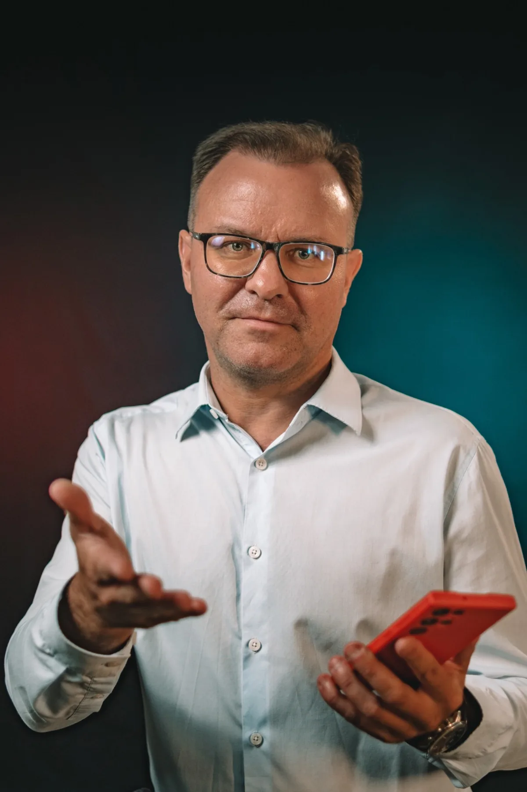

Работы всё больше, а времени на то, чтобы разобраться в новом, не остаётся.
С чего можно начать
С того, что отнимает больше всего часов. Часто часть рутины можно упростить или передать инструментам.
Бутиковая проектная студия
Помогаем разобраться в технологиях и превращаем сложные задачи в понятные решения, инструменты и работающие продукты.
Знакомые ситуации
Работы всё больше, а времени на то, чтобы разобраться в новом, не остаётся.
С чего можно начать
С того, что отнимает больше всего часов. Часто часть рутины можно упростить или передать инструментам.
Инструментов десятки. Какой из них нужен мне, непонятно.
С чего можно начать
Выбор начинается не с инструмента. Сначала разбираем задачу, затем подбираем то, что ей подходит. Иногда это вовсе не нейросеть.
Идея есть. Как превратить её в результат, неясно.
С чего можно начать
Разложим идею на шаги, определим ресурсы и первый реальный шаг, который можно сделать уже сейчас.
Сотрудники уже пользуются нейросетями, но каждый по-своему.
С чего можно начать
С диагностики: где технологии действительно помогают команде. Затем обучение на ваших рабочих задачах.
Знаний и опыта много, а курс никак не складывается в систему.
С чего можно начать
Со структуры и методологии: логика продукта, программа, учебные материалы, практика.
Если вы узнали себя, вы по адресу. Разбираться во всех технологиях самостоятельно не обязательно.
Рассказать о своей ситуацииНаш принцип
Мы не начинаем с выбора нейросети. Мы начинаем с вопроса: что нужно человеку и что должно измениться в его работе.
Иногда правильным решением становится искусственный интеллект. Иногда таблица, программа, методика или новый порядок работы. Технология — это средство. Результат для человека — цель.
Решение подбирается под задачу. Иногда подходит один из вариантов, чаще их сочетание.
Что мы можем сделать
Когда
Хочется понять, где AI действительно сэкономит время, а где он не нужен.
Что получится
Сценарии применения под ваши задачи, подобранные инструменты, рабочие инструкции и обучение команды.
Когда
Сотрудники пользуются технологиями бессистемно, и результат зависит от случая.
Что получится
Программа по итогам диагностики, практика на рабочих материалах, учебные модули и оценка результатов.
Когда
Есть экспертиза и идея курса, но нет структуры и понятной логики обучения.
Что получится
Образовательная программа, учебно-методический комплекс, интерактивные задания, сопровождение автора.
Когда
Рабочий процесс отнимает слишком много ручных операций.
Что получится
Схема упрощения процесса, подбор инструментов, концепция или прототип решения и сопровождение реализации.
Когда
Цель понятна, но неясно, как организовать работу и измерить результат.
Что получится
Концепция, цели и показатели, этапы, команда, контроль результатов.
Как мы работаем
Каждый шаг отвечает на свой вопрос. Поэтому к выбору технологий мы приходим только на четвёртом.
Разбираемся, что происходит сейчас, в чём проблема и почему привычный способ работы не даёт нужного результата.
Формулируем конкретную цель и определяем, что должно измениться.
Разрабатываем сценарий действий: ресурсы, инструменты, этапы.
Подбираем инструменты исходя из задачи, а не наоборот.
Создаём, адаптируем или внедряем решение. При необходимости привлекаем профильных специалистов.
Проверяем, насколько решение соответствует поставленной цели.
Это цикл. Оценка показывает, что работает и что стоит улучшить, и при необходимости работа идёт на следующий круг.
Проекты и практика
Мы отделяем выполненные проекты от методологического консультирования и демонстраций, чтобы было видно, за что отвечали мы, а за что партнёры.
Лесохимическое предприятие. Название клиента не публикуется.
Понять, где AI полезен сотрудникам в их реальной работе, и научить применять его системно.
Опрос и диагностика, затем индивидуальная программа вокруг приоритетных направлений.
Проведено обучение по индивидуальной программе. Создан специализированный инструмент для построения промптов.
Проект представлен как корпоративное обучение и проектирование практического применения AI. Экономия времени не измерялась, поэтому мы её не указываем.
Как шёл проект
1 / 6
Много информации, документов и рабочих задач. Общей структуры пока нет.
Условная схема хода работы, а не интерфейс программы
Проектирование корпоративного образовательного продукта и годового цикла обучения вместе с отраслевым экспертом.
Созданы несколько игр, и специалист освоила способ самостоятельно делать новые задания с помощью AI.
Полный методический комплекс на 20 академических часов. Принят сетью и допущен к тиражированию.
Инженерно-творческое направление для школьников: 166 учащихся, 5 направлений, 32 цифровых продукта.
Проверка требований, логики проекта, бюджета и оценка зрелости заявки.
30 участников обучено, 7 видеороликов, 14 интервью, охват более 5 000 человек. Бюджет исполнен полностью.

Основатель
За технологиями всегда стоит человек. И именно человек понимает, какую задачу необходимо решить.
Студия работает на личном профессиональном участии основателя. В работе соединяются методология, образовательная практика, технологии и проектное управление. Когда задаче нужна другая экспертиза, подключаются профильные специалисты и партнёры.
Как начать
Если удобнее написать напрямую:
Теперь разберёмся вместе
Ваше сообщение получено. Я внимательно ознакомлюсь с вашей задачей и свяжусь с вами, чтобы обсудить возможные пути решения.
Необязательно знать ответ заранее. Достаточно понимать, что хочется изменить. С остальным поможем разобраться.
AI OASIS · Сначала задача. Потом технология